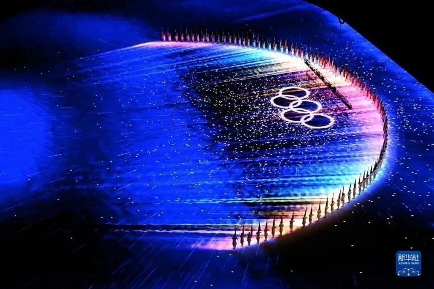
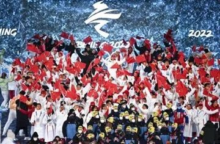
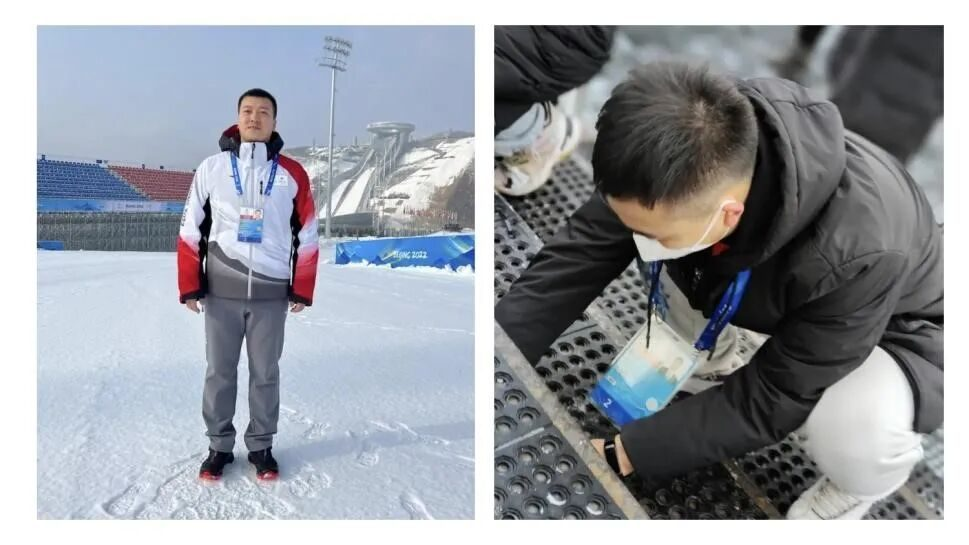
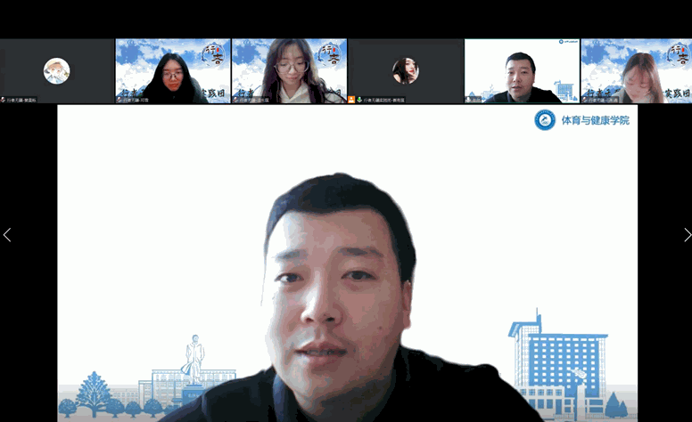
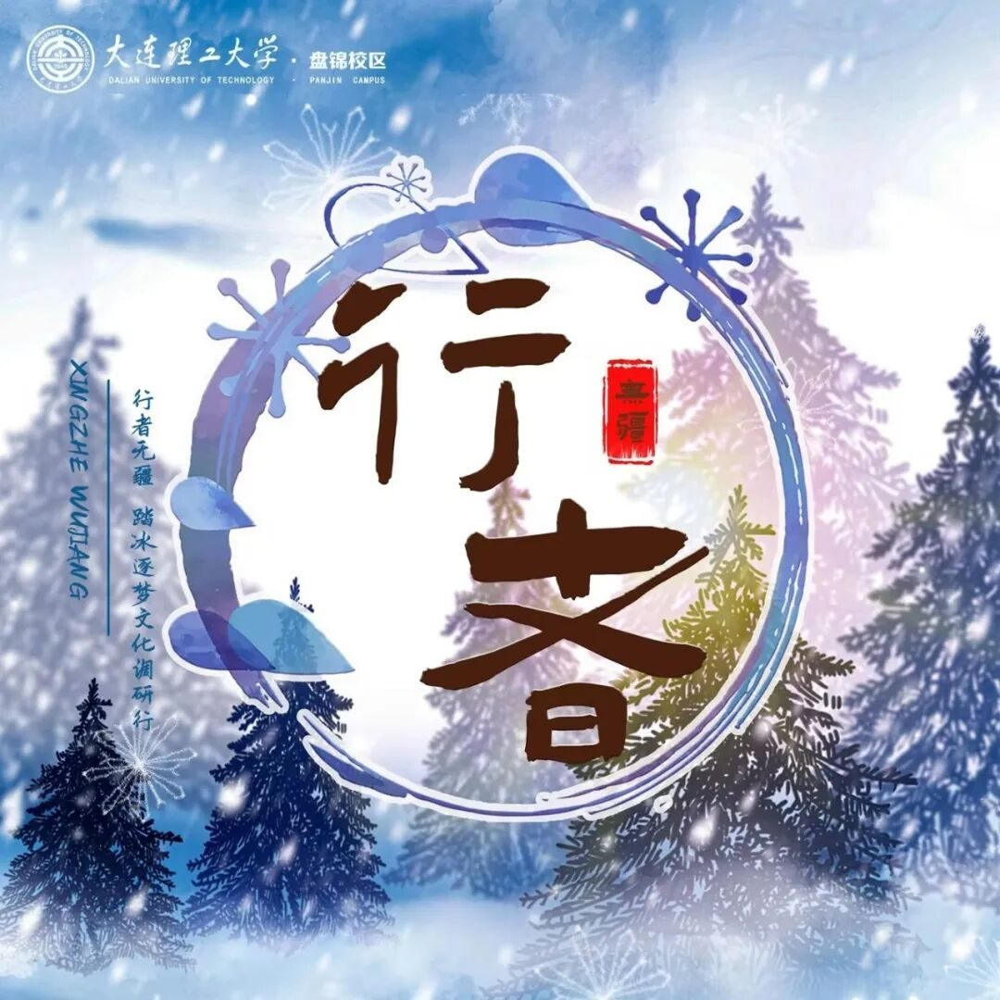

镜头外的冬奥大工——志愿者裁判专访

镜头外的冬奥大工
冬奥会赛事精彩纷呈，离不开运动员的奋勇拼搏，也同样离不开幕后人员的周到服务和精细保障。中国新闻网、辽宁日报、大连日报等媒体多次对大工师生担任北京冬奥会、冬残奥会国内技术官员进行聚焦报道。
大工体育与健康学院教师王健壮和毕然，担任了北京冬奥会、冬残奥会越野滑雪和冬季两项比赛的裁判；运动训练专业本科生鲁春阳作为双人雪车项目试滑员为冬奥会服务；体育与健康学院盘锦分院2020级研究生孙铜和化工学院2020级本科生高寒，作为志愿者为冬奥会服务。

冬奥中国运动员合影
2023年1月14日，行者无疆实践团紧接着有幸拜访到了毕然老师与孙铜学长，他们讲述在北京冬奥会中的经历与见闻，为我们徐徐铺开中国冰雪的盛宴。
实力助力冬奥
北京冬奥会的裁判选拔工作从2018年就已经开始。毕然老师经辽宁省冬季运动管理中心推荐，参加了冬奥组委组织的首期冬奥会NTO，最终通过考核获得冬奥会裁判资格，并于2022年1月初收到北京冬奥组委的报到通知。为冬季两项项目助力。
孙铜学长依靠扎实的专业知识，优秀的工作经验及能力，顺利通过冬奥会志愿者选拔，作为北京冬奥会张家口赛区，越野滑雪项目志愿者，在项目运动员休息区服务，与其他志愿者一同配合，完成冬奥组委和技术官员老师布置的任务，他尽自己所能服务冬奥会，努力向世界展现中国青年的风采，展现大工人的风采。

毕然老师（左）和孙铜学长（右）
科技彰显国力
为世界奉献一届精彩、非凡、卓越的奥运盛会，离不开强大科技实力的支撑。我校国防科技创新团队将航天薄壁结构设计推出高性能滑雪头盔、由我校研究成果研制的灭杀新型冠状病毒净化器、大工校友的科技成果让主火炬“大雪花”升起、播控LED屏幕呈现完美效果…毕然老师更是对3D+AI渲染叠加的转播技术与我们进行交流，在物料创新问题上描述了现场美轮美奂的灯光秀，让人身临其境。
滑动查看更多
大工力量助力冬奥
担当不惧风险
“对于奥运会有特殊的执念”，毕然老师如是说。每一个能提供国内技术的官员都被告知了去冬奥会是有被感染的风险，难免与来自全世界各国的运动员们近距离接触，但毕然老师和孙铜学长还是选择为冬奥会的圆满成功奉献自己的一份力量。
冬奥会圆满闭幕
希望寄予青年
谈到体育，毕然老师引用毛主席的名言，“身体是革命的本钱”，通过介绍凌水主校区的冰雪体验课与五千米长跑的现实意义，督促大学生重视体育、强健体魄，以更好的姿态和水准面对生活的挑战。孙铜学长也说“冬奥盛事机遇难得，”“不断增长知识与能力，于生活点滴中孕育面对困难的勇气。”

毕然老师
问答彩蛋

冬奥现场会有物料创新的彩色冰雕吗？
冬季两项是场地是没有冰雕的，但炫丽多彩的灯光秀也能让人大饱眼福。
运动员们休息区在干嘛？
大多数时间在看现场赛事转播。
冬奥纪念品周边商店买买买的人多吗？
会优先保障运动员的购买需求。
志愿者工作的英语口语会遇到困难吗？
会有运动员们母语也不是英语，或者听不清楚的情况，经过一天磨合大致了解他们的需求，工作会顺利很多。
北京冬奥会留下的诸多遗产，正在产生日益旺盛的生命力，为中国冬季运动的蓬勃发展奠定了良好的基础。
感谢在冬奥上大放异彩的运动员，默默付出的工作人员。祖国繁荣昌盛，必将引领越来越多的国际性赛事走向成功！
来源 | 行者无疆实践团
图片 | 行者无疆实践团
图片 | 部分来源于网络
文字 | 丁稼桐
排版 | 崔雨琪
审核 | 周奕彤 崔雨琪


行
者
这个冬天我们一起踏冰逐梦！